- Armatex
- Złączki zaciskane
- Trójnik redukcyjny 2130R
Besco · Stal węglowa press, profil M
Trójnik redukcyjny press ze stali węglowej 2130R
Trójnik redukcyjny z linii stal węglowa press, profil M: 42 rozmiary od 15 × 12 × 15 do 28 × 28 × 22 mm. Zastosowanie: ogrzewanie, sprężone powietrze.
- Rozmiary
- 42
- Ciśnienie
- 16 bar
- Temperatura
- −10…110 °C
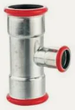
Rozmiary i numery artykułów
Źródło: katalog Besco 2026| Rozmiar | Nr artykułu | Worek | Karton | Ilość do zapytania |
|---|---|---|---|---|
| 15 × 12 × 15 | 2130R-15.12.15 | 10 szt. | 80 szt. | |
| 15 × 18 × 15 | 2130R-15.18.15 | 10 szt. | 50 szt. | |
| 15 × 22 × 15 | 2130R-15.22.15 | 10 szt. | 40 szt. | |
| 18 × 15 × 18 | 2130R-18.15.18 | 10 szt. | 60 szt. | |
| 18 × 22 × 18 | 2130R-18.22.18 | 10 szt. | 50 szt. | |
| 22 × 15 × 22 | 2130R-22.15.22 | 10 szt. | 40 szt. | |
| 22 × 18 × 22 | 2130R-22.18.22 | 10 szt. | 40 szt. | |
| 22 × 28 × 22 | 2130R-22.28.22 | 10 szt. | 20 szt. | |
| 28 × 15 × 28 | 2130R-28.15.28 | 10 szt. | 30 szt. | |
| 28 × 18 × 28 | 2130R-28.18.28 | 10 szt. | 30 szt. | |
| 28 × 22 × 28 | 2130R-28.22.28 | 10 szt. | 30 szt. | |
| 35 × 15 × 35 | 2130R-35.15.35 | 4 szt. | 16 szt. | |
| 35 × 18 × 35 | 2130R-35.18.35 | 4 szt. | 16 szt. | |
| 35 × 22 × 35 | 2130R-35.22.35 | 4 szt. | 16 szt. | |
| 35 × 28 × 35 | 2130R-35.28.35 | 4 szt. | 16 szt. | |
| 42 × 22 × 42 | 2130R-42.22.42 | 4 szt. | 12 szt. | |
| 42 × 28 × 42 | 2130R-42.28.42 | 4 szt. | 8 szt. | |
| 42 × 35 × 42 | 2130R-42.35.42 | 2 szt. | 8 szt. | |
| 54 × 22 × 54 | 2130R-54.22.54 | 1 szt. | 6 szt. | |
| 54 × 28 × 54 | 2130R-54.28.54 | 1 szt. | 6 szt. | |
| 54 × 35 × 54 | 2130R-54.35.54 | 1 szt. | 6 szt. | |
| 54 × 42 × 54 | 2130R-54.42.54 | 1 szt. | 6 szt. | |
| 66,7 × 28 × 66,7 | 2130R-67.28.67 | 1 szt. | 2 szt. | |
| 66,7 × 35 × 66,7 | 2130R-67.35.67 | 1 szt. | 2 szt. | |
| 66,7 × 42 × 66,7 | 2130R-67.42.67 | 1 szt. | 2 szt. | |
| 66,7 × 54 × 66,7 | 2130R-67.54.67 | 1 szt. | 2 szt. | |
| 76,1 × 22 × 76,1 | 2130R-76.22.76 | 1 szt. | 2 szt. | |
| 76,1 × 28 × 76,1 | 2130R-76.28.76 | 1 szt. | 2 szt. | |
| 76,1 × 35 × 76,1 | 2130R-76.35.76 | 1 szt. | 2 szt. | |
| 76,1 × 42 × 76,1 | 2130R-76.42.76 | 1 szt. | 2 szt. | |
| 76,1 × 54 × 76,1 | 2130R-76.54.76 | 1 szt. | 2 szt. | |
| 76,1 × 66,7 × 76,1 | 2130R-76.67.76 | 1 szt. | 1 szt. | |
| 88,9 × 54 × 88,9 | 2130R-89.54.89 | 1 szt. | 3 szt. | |
| 88,9 × 76,1 × 88,9 | 2130R-89.76.89 | 1 szt. | 1 szt. | |
| 108 × 54 × 108 | 2130R-108.54.108 | 1 szt. | 2 szt. | |
| 108 × 66,7 × 108 | 2130R-108.67.108 | 1 szt. | 1 szt. | |
| 108 × 76,1 × 108 | 2130R-108.76.108 | 1 szt. | 1 szt. | |
| 108 × 88,9 × 108 | 2130R-108.89.108 | 1 szt. | 1 szt. | |
| 22 × 15 × 15 | 2130R-22.15.15 | 10 szt. | 40 szt. | |
| 22 × 22 × 15 | 2130R-22.22.15 | 10 szt. | 40 szt. | |
| 28 × 22 × 22 | 2130R-28.22.22 | 5 szt. | 20 szt. | |
| 28 × 28 × 22 | 2130R-28.28.22 | 5 szt. | 20 szt. |
- Linia
- Stal węglowa press, profil M
- Zastosowanie
- ogrzewanie, sprężone powietrze
- Nazwa w katalogu
- Reducing Tee
Zapytaj o wycenę: Trójnik redukcyjny 2130R.
Dodaj rozmiary do listy przyciskiem „Dodaj” albo od razu napisz do nas. Ceny hurtowe, dostępność i terminy przygotujemy w ciągu jednego dnia roboczego.
Inne produkty w linii
Szukaj w linii Stal węglowa press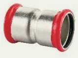
Mufa 2270 · 12 rozm.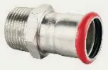
Złączka z GZ 2243G · 18 rozm.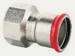
Złączka z GW 2270G · 13 rozm. Mufa redukcyjna ww 2240 · 8 rozm.
Mufa redukcyjna ww 2240 · 8 rozm. Mufa przesuwna 2271 · 11 rozm.
Mufa przesuwna 2271 · 11 rozm. Półśrubunek z GW 2359G · 5 rozm.
Półśrubunek z GW 2359G · 5 rozm. Śrubunek z GZ 2331G · 7 rozm.
Śrubunek z GZ 2331G · 7 rozm.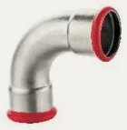
Łuk 90° ww 2002 · 12 rozm.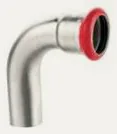
Łuk 90° wz 2001 · 12 rozm. Łuk 45° ww 2041 · 12 rozm.
Łuk 45° ww 2041 · 12 rozm. Łuk 45° wz 2040 · 12 rozm.
Łuk 45° wz 2040 · 12 rozm. Łuk 90° z GZ 2001G · 8 rozm.
Łuk 90° z GZ 2001G · 8 rozm.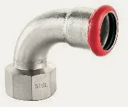
Łuk 90° z GW 2002G · 5 rozm.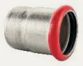
Zaślepka 2301 · 8 rozm.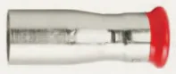
Redukcja wz 2243 · 26 rozm.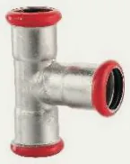
Trójnik równoprzelotowy 2130 · 12 rozm. Trójnik z GW 2130G · 17 rozm.
Trójnik z GW 2130G · 17 rozm.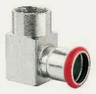
Kolano 90° z GZ 2090G · 5 rozm.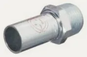
Złączka z GZ 2280 · 3 rozm. Złączka z GW 2281 · 4 rozm.
Złączka z GW 2281 · 4 rozm.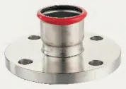
Kołnierz z końcówką press PN 16 2510 · 4 rozm.